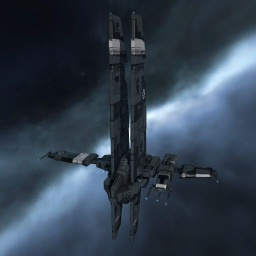

Heron

Тип корабля: Фрегат
Государство/Организация: Caldari
Примерная стоимость: 634.000 ISK
Описание
Благодаря относительно мощным бортовым электронно-вычислительным системам, применение «Герона» в целях ведения РЭБ не исключается. Однако его защита сравнительно слаба, а эффективность бортовых вооружений весьма ограничена, в связи с чем его чаще используют для разведки и исследования.
Характеристики
Корпус
Запас прочности корпуса: 200 ед.
Вместимость грузового отсека: 400 м^3
Объем отсека для дронов: 35 м^3
Пропускная способность канала телеуправления: 15 Мбит/с
Масса: 1.150.000 кг
Занимает объем: 18.900,0 м^3 (2.500,0 м^3 в разобранном виде)
Влияние инертности конструкции: 3,57x
Сопротивление корпуса ЭМ-урону: 33 %
Сопротивление корпуса термальному урону: 33 %
Сопротивление корпуса кинетическому урону: 33 %
Сопротивление корпуса фугасному урону: 33 %
Броня
Запас прочности брони: 200 ед.
Сопротивление брони ЭМ-урону: 50 %
Сопротивление брони термальному урону: 45 %
Сопротивление брони кинетическому урону: 25 %
Сопротивление брони фугасному урону: 10 %
Щит
Запас прочности щита: 400 ед.
Влияние на время регенерации щитов: 10 минут и 25 секунд
Сопротивление щита ЭМ-урону: 0 %
Сопротивление щита термальному урону: 20 %
Сопротивление щита кинетическому урону: 40 %
Сопротивление щита фугасному урону: 50 %
Сопротивление средствам РЭП
Сопротивление накопителя нейтрализирующему воздействию: 0 %
Сопротивление воздействию генератору стазис-поля: 0 %
Сопротивление воздействию помех на наводку вооружения: 0 %
Накопитель энергии
Емкость накопителя: 245,0 ГДж
Время востановления заряда: 135 с
Целеуказания
Максимальная дальность захвата цели: 37,5 км
Максимальное количество захваченных целей: 4
Радиус сигнатуры: 40 м
Разрешающая способность систем захвата цели: 430 мм
Эффективность радарной системы: -
Эффективность магнитнометрической системы: -
Эффективность гравиметрической системы: 12 ед.
Эффективность ладарной системы: -
Двигательная установка
Максимальная скорость: 340 м/с
Скорость в варп-режиме: 5,0 а.е./с.
Служба оснащения
Мощность ЦПУ: 260,0 Тф
Мощность реактора: 24 МВт
Калибровка: 400 ед.
Точки монтажа орудийных установок: 2
Точки монтажа пусковых установок: 2
Разъемы большой мощности: 3
Разъемы средней мощности: 5
Разъемы малой мощности: 2
Разъемы под установку тюнинг-модулей: 3